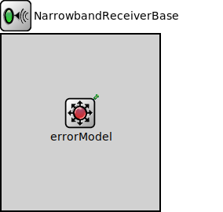

Package: inet.physicallayer.wireless.common.base.packetlevel
NarrowbandReceiverBase
compound moduleThis module servces as a base module for narrowband receiver models.
Usage diagram
The following diagram shows usage relationships between types. Unresolved types are missing from the diagram.
Inheritance diagram
The following diagram shows inheritance relationships for this type. Unresolved types are missing from the diagram.
Known subclasses
| Name | Type | Description |
|---|---|---|
| ApskDimensionalReceiver | compound module |
This receiver model receives a transmission succesfully if the minimum of the signal to noise and interference ratio over the duration of the reception is sufficiently high. It uses the error model to compute the error rate based on this value and the used modulation. |
| ApskScalarReceiver | compound module |
This receiver model receives a transmission succesfully if the minimum of the signal to noise and interference ratio over the duration of the reception is sufficiently high. It uses the error model to compute the error rate based on this value and the used modulation. |
| Ieee80211ReceiverBase | compound module |
This receiver model serves as the base module for IEEE 802.11 receivers. It supports switching channels, configuring different operation modes, and preamble modes. |
| Ieee802154NarrowbandDimensionalReceiver | compound module | (no description) |
| Ieee802154NarrowbandScalarReceiver | compound module | (no description) |
Extends
| Name | Type | Description |
|---|---|---|
| SnirReceiverBase | compound module |
This module servces as a base module for SNIR receiver models. |
Parameters
| Name | Type | Default value | Description |
|---|---|---|---|
| snirThreshold | double |
reception is not successful if the SNIR is below this threshold (unsuccessful reception) |
|
| snirThresholdMode | string | "min" | |
| energyDetection | double |
no signal is detected at all below this reception power threshold (idle state) |
|
| sensitivity | double |
reception is not possible if the signal power is below sensitivity (idle or busy states) |
|
| centerFrequency | double |
center frequency of the band where this receiver listens on the medium |
|
| bandwidth | double |
bandwidth of the band where this receiver listens on the medium |
|
| modulation | string |
one of "BPSK", "16-QAM", "256-QAM" |
Properties
| Name | Value | Description |
|---|---|---|
| display | i=block/wrx |
Source code
// // This module servces as a base module for narrowband receiver models. // module NarrowbandReceiverBase extends SnirReceiverBase like IReceiver { parameters: double energyDetection @unit(dBm); // no signal is detected at all below this reception power threshold (idle state) double sensitivity @unit(dBm); // reception is not possible if the signal power is below sensitivity (idle or busy states) double centerFrequency @unit(Hz); // center frequency of the band where this receiver listens on the medium double bandwidth @unit(Hz); // bandwidth of the band where this receiver listens on the medium string modulation; // one of "BPSK", "16-QAM", "256-QAM" @display("i=block/wrx"); submodules: errorModel: <> like IErrorModel if typename != "" { @display("p=100,100"); } }File: src/inet/physicallayer/wireless/common/base/packetlevel/NarrowbandReceiverBase.ned
 This documentation is released under the Creative Commons license
This documentation is released under the Creative Commons license